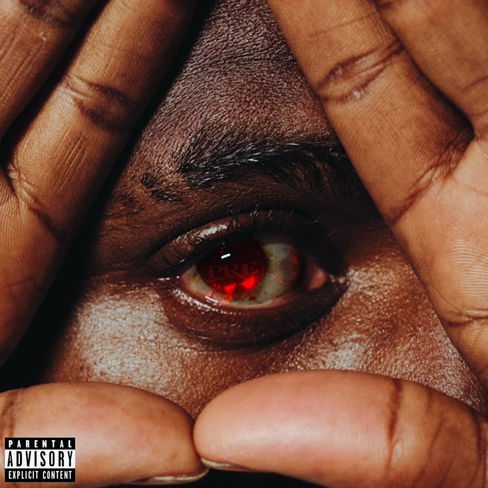
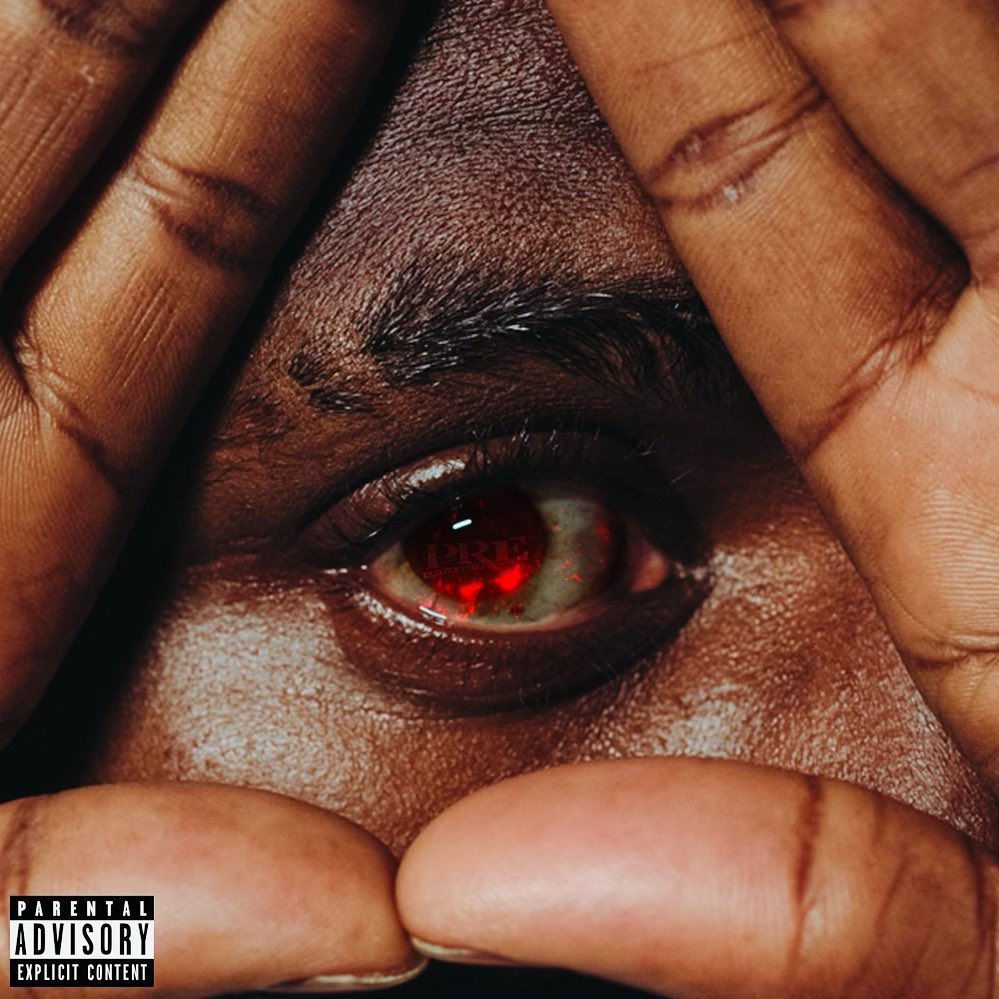
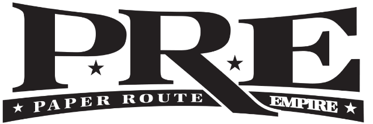
Paper Route Empire abbreviated as (P.R.E), was founded in 2008 by a world famous rapper known as Adolph Robert Thorton.
Better known by his stage name Young Dolph, he was born in July 1985, in South Mempis where he grew up with his mother.
In 2016, he released his debut studio album; King of Memphis, which peaked at number 49 on the Billboard 200 chart.
He was featured on O.T. Genasis's hit single "Cut It", which peaked at number 35 on the Billboard Hot 100.
Young Dolph's album, Rich Slave, was released in 2020 and became his highest-charting project, debuting at number 4 on the Billboard 200.
On November 17, 2021, he was shot and killed in Memphis, Tennessee in a store he usually visits to Cookies.
Loved by the community, he had a very big fanbase and was like a brother to many.
Adolph was a recognized CEO, a father of two; Tre and Ari, and a loyal husband to his wife; Mia Jayes.
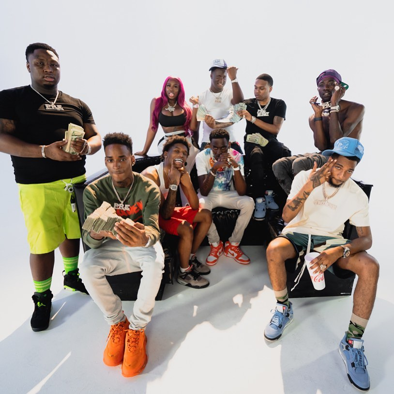
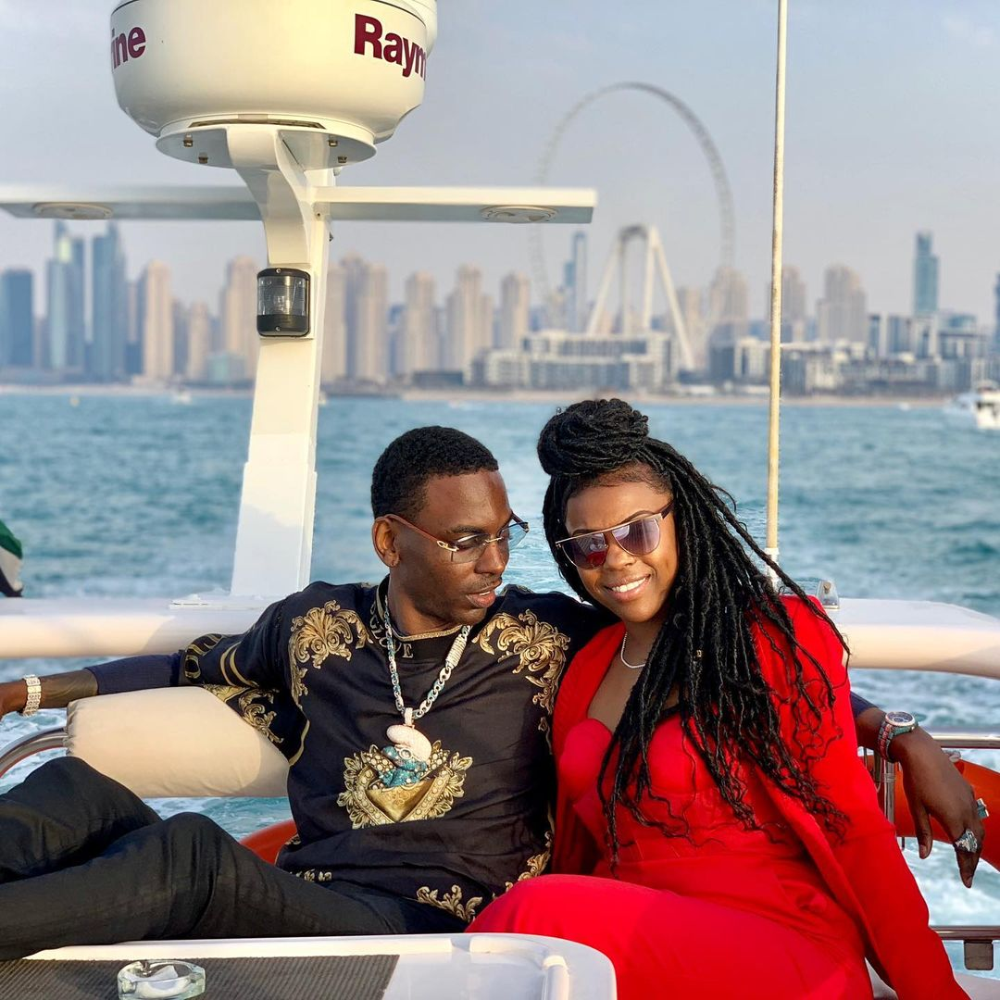
| ALBUMS | |||
|---|---|---|---|
|
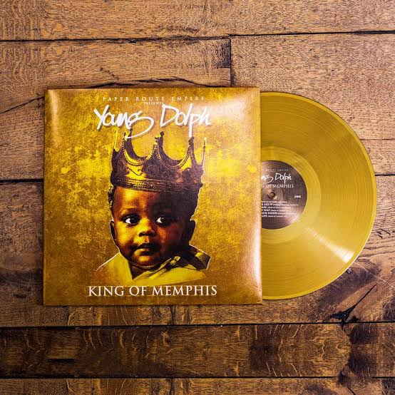
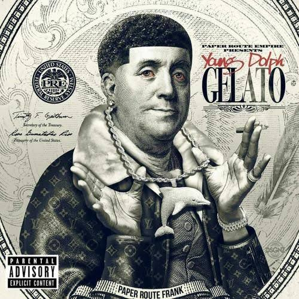
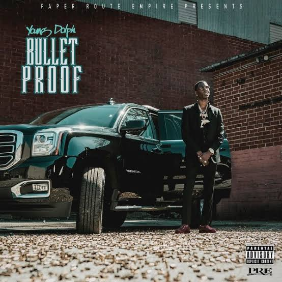
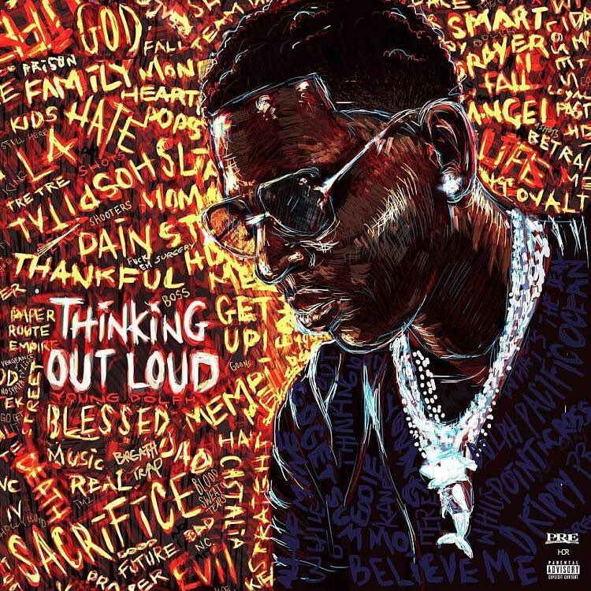
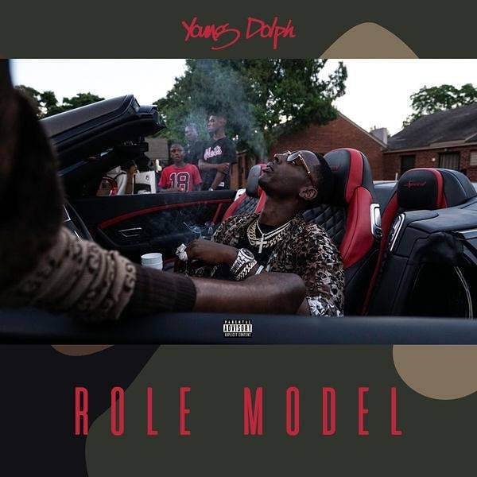
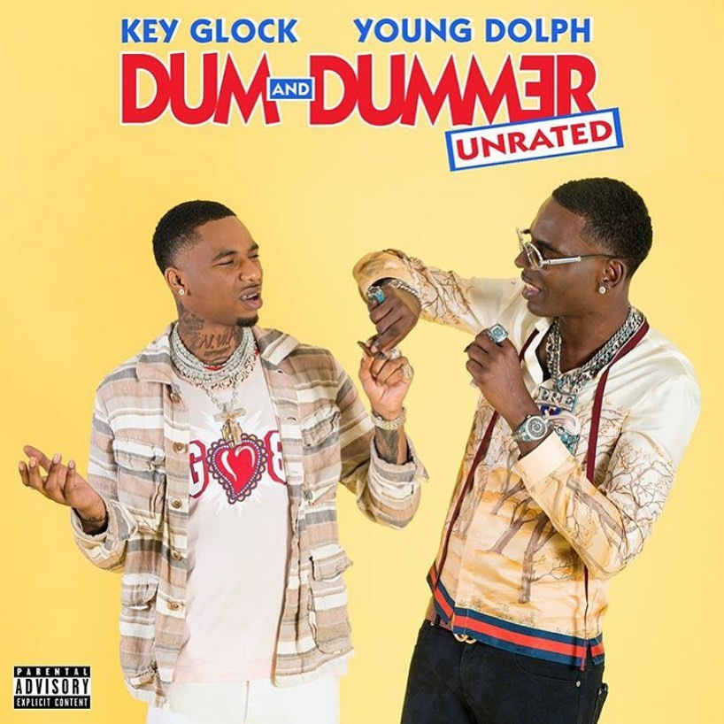
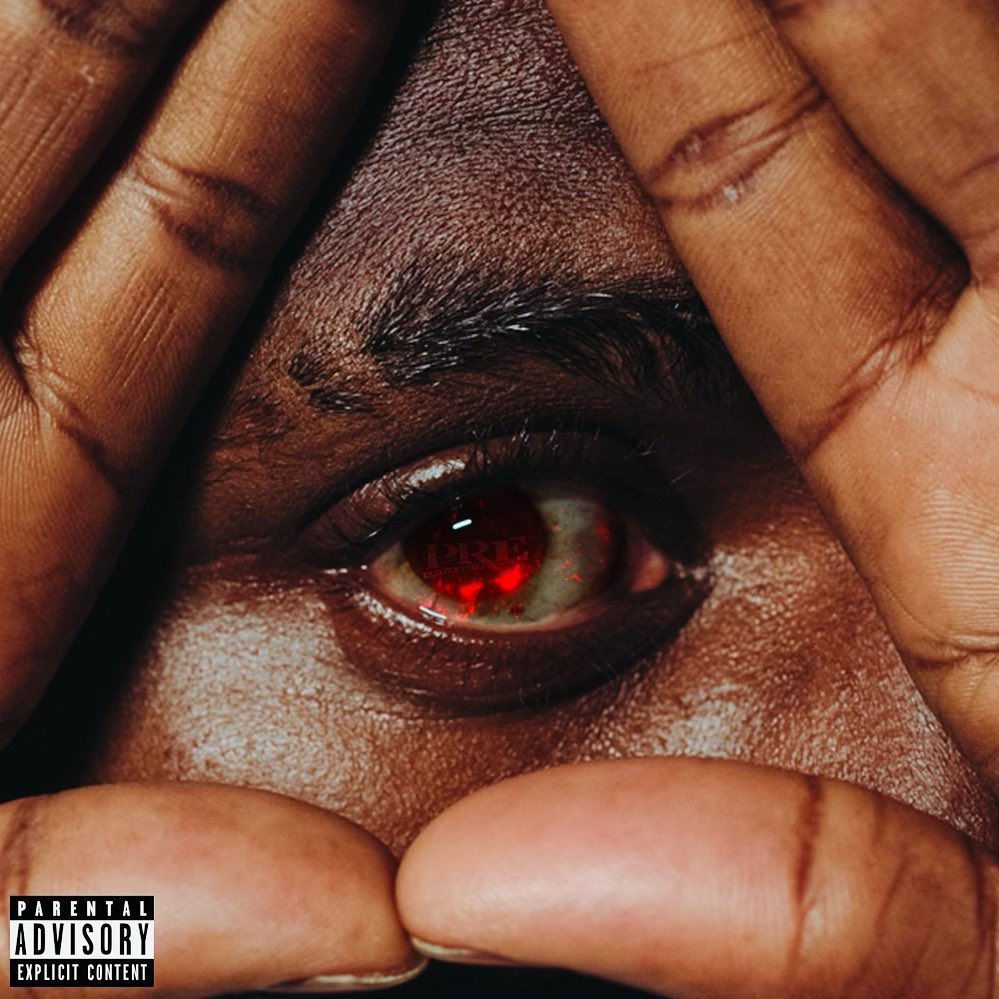
|
|||
KING OF MEMPHIS ALBUM (2016)
FACTS
GELATO ALBUM (2016)
PLAY WIT' YO BITCH
Young Dolph is dissing Yo Gotti since Yo Gotti dissed the rap group Three 6 Mafia.
He dissed rapper V-Slash and called himself the "King of Memphis" on a 2008 song called "Touch Down".
V-Slash and Yo Gotti used to be friends until some personal issues came up causing V-Slash to leave Gotti and cut off all ties with him.
Same with Three 6 Mafia, some personal issues arose separating the group from Yo Gotti.
BULLETPROOF ALBUM (2017)
100 SHOTS.
After an attempt to kill him from his oppositions in Memphis, Adolph was caught in a shoot out where his car was hit numerous times.
According to the FBI autopsy, over 100 bullet holes where on his car while he was inside it.
No one was injured, thus Young Dolph dropped the world famous hit having 96 Million views on YouTube.
THIKING OUT LOUD ALBUM (2017)
GO GET SUM MO
In 2017, Young Dolph dropped Thinking out loud album and one of his music featuring well known rappers; Gucci Mane, 2Chainz and Ty Dolla Sign
Being the 7th song in the album, Dolph is joined by the Atlanta natives to rap about their wealth and large amount of Jewelery.
The song is produced by Da Honorable C.N.O.T.E. and samples by Zommbamafoo by Hoodrich Pablo Juan
ROLE MODEL ALBUM (2018)
MAJOR
Young Dolph and signed his cousin Markeyvius LaShun Cathey whose stage name is, KeyGlock.
With over 80Million views on YouTube, they displayed their love for camouflaged cars and expensive Jewelery.
DUM AND DUMMER ALBUM(2019)
WATER ON WATER
In Water on Water on Water, Dolph and Glock drippin but if you get too much dip on ya chip, they also got choppas on choppas on choppas uh
The music video has over 32million views on YouTube.
RICH SLAVE ALBUM(2020)
RNB
Young Dolph goes verse for verse with Megan Thee Stallion for his new single RNB.
Produced by Juicy J, the track also comes with an animated visualizer video you can watch below.
At the beginning of March 2020, Dolph announced he was retiring from music to "kick it" with his son.
Weeks later, the Memphis rapper returned to social media to announce his forthcoming album, writing, "My son jus told me I can't be his dad if I stop putting out music."
On March 20th 2020, he teased that the project would hit streaming services that night.
The release was Dolph's first full-length since 2019's Dum and Dummer with Key Glock, and his first solo release since 2018's Role Model.
ILLUMINATI ALBUM (2021)
TALKING TO MY SCALE
This new album feels like a culmination of this career. The 78-minute runtime is intimidating, but it means we get to spend more time with Dolph and his compelling roster of personalities.
On opener "Talking to My Scale," Dolph starts with a motivated Tupac-on-lean monologue about the fakeness of your enemies and "running it up to the motherfuckin ceiling."
Then asks an earnest question: "If I sacrifice myself, will I go to Hell?" It’s Dolph’s gift to casually let you into his life like this, using first-person anecdotes that detail his rise to the top.
Glock, his most direct descendant, has a similar knack for storytelling, and he displays it on “Mister Glock 2.
The bling heavy Young Dolph featured on a YouTube clip where he was seen throwing a $22 million-dollar contract on the hood of an expensive wraith.
The rapper then looks at the camera and says "Fuck the $22 million," before bursting into laughter.
In a separate clip, he then revealed his impressive collection of cars - including a Challenger, Ferrari, G-Wagon, Demon, Wraith and a Bentley.
According to Dub Magazine, the camouflaged vehicles were part of his extensive fleet.
He boasted: "I did (wrap) the G-Wagon first and loved that sh*t, and decided this was gonna be the P.R.E sh*t and just went crazy with it."
"I decided to put the camo wrap on all my cars."
| 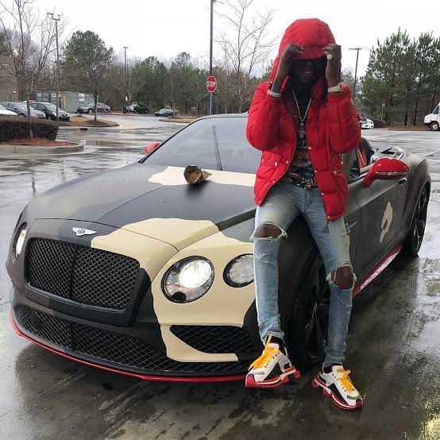 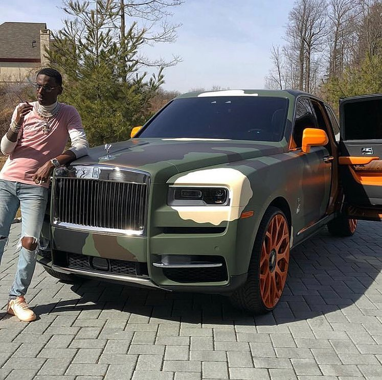 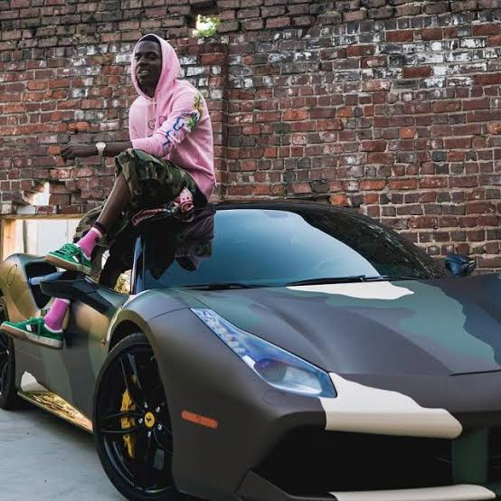 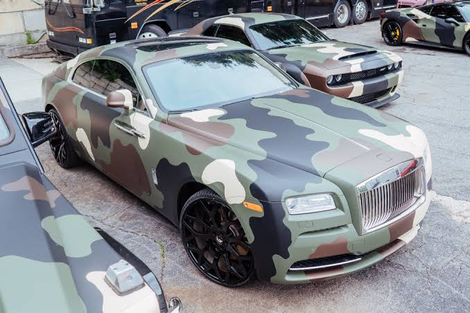 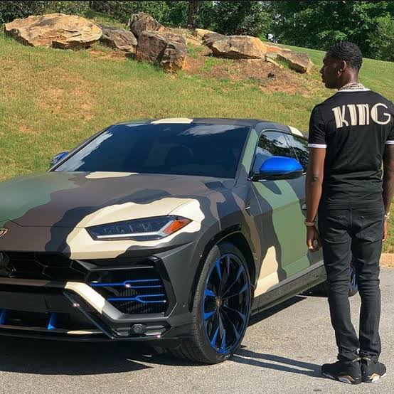 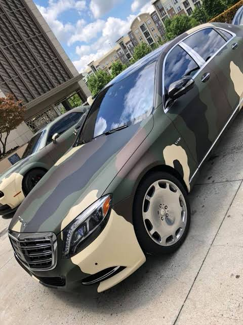 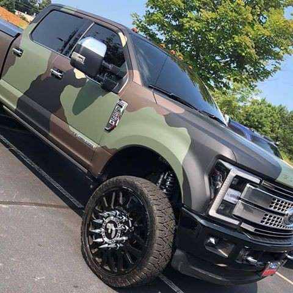 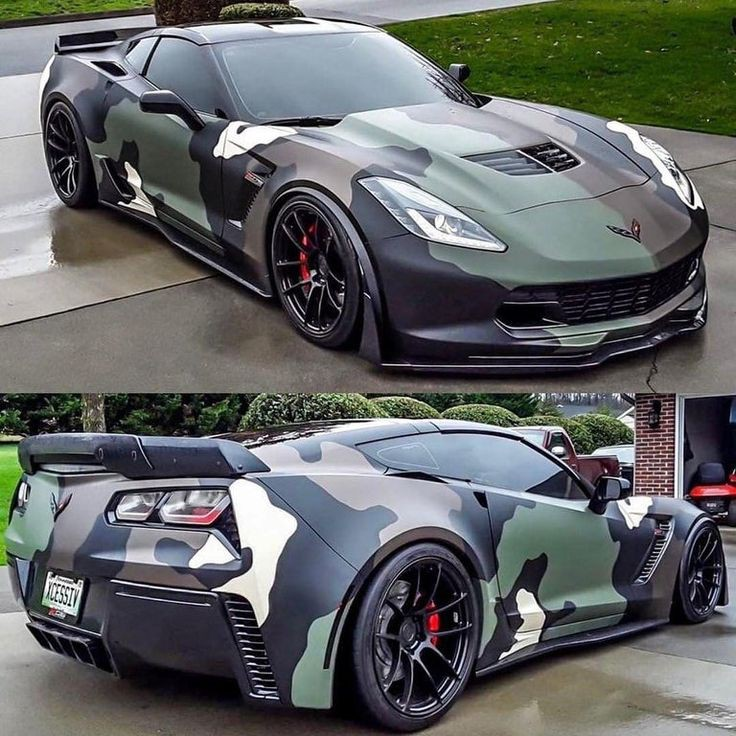 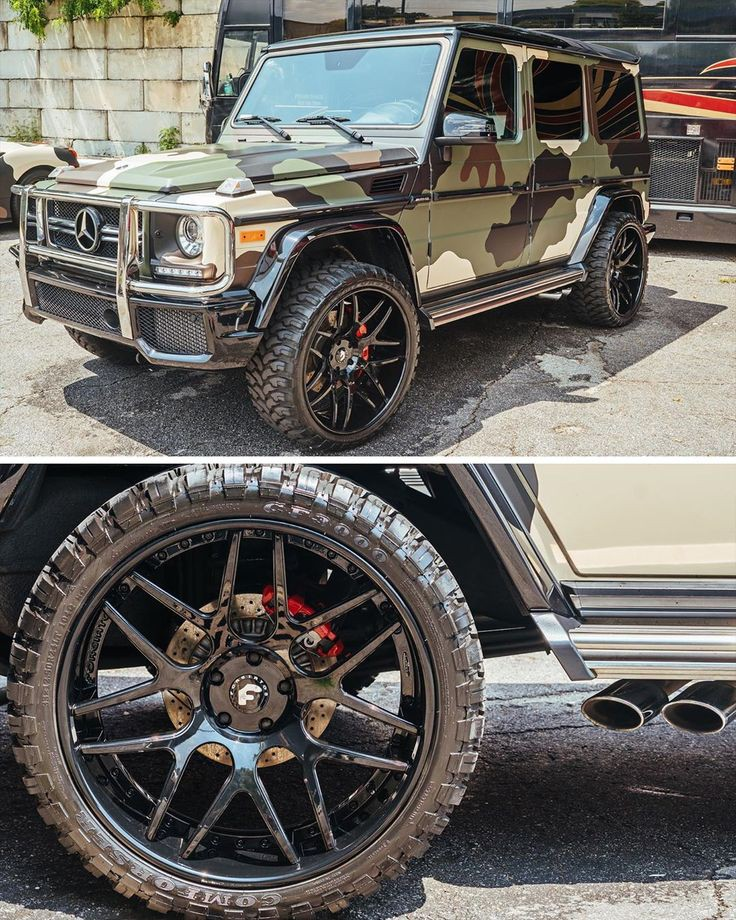 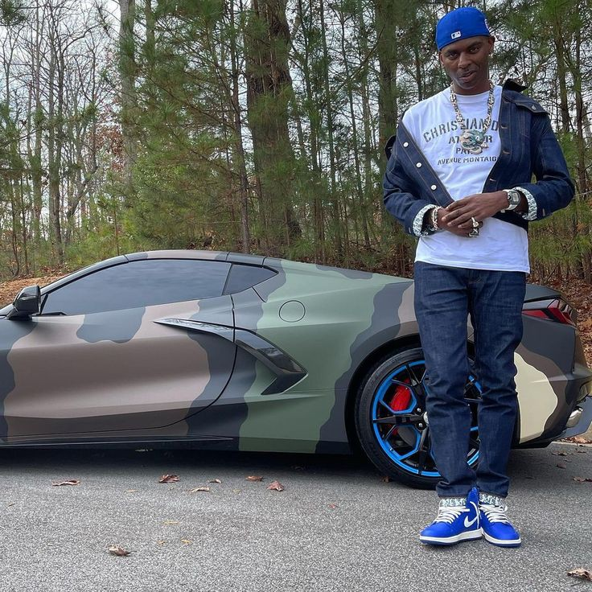 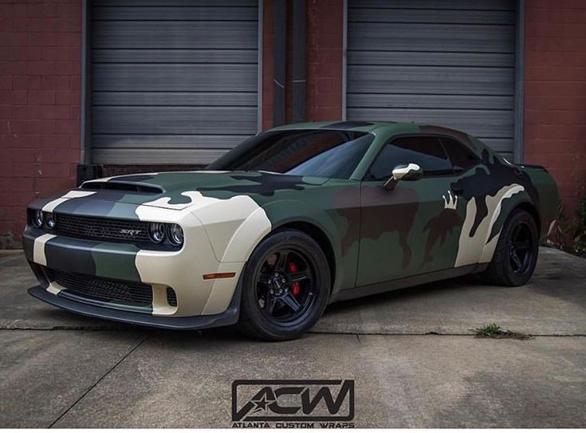 |
| PAPER ROUTE FAN SECTION |
|---|